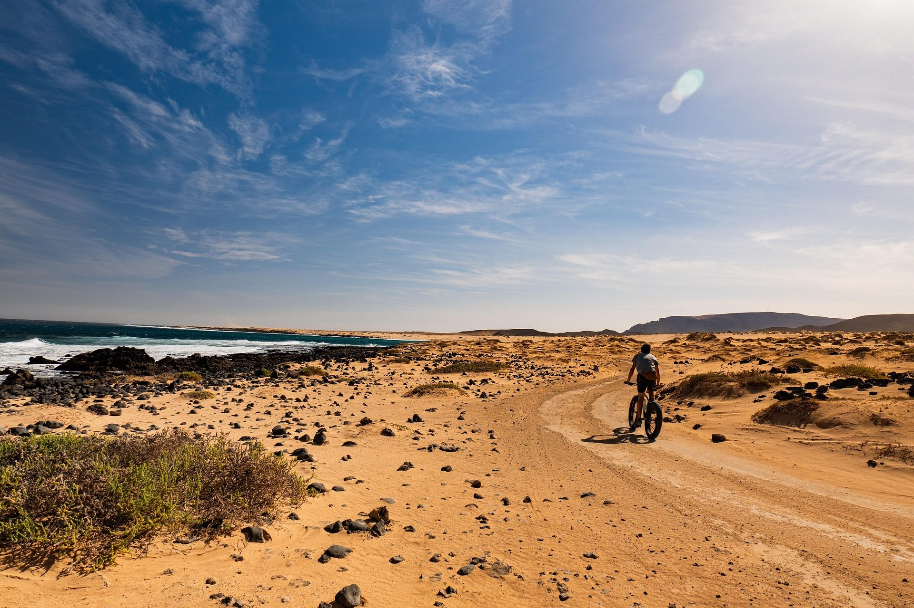

Volver al blog CiclismoMTB en Canarias: las mejores rutas y por dónde se puede circular legalmente
Canarias tiene todo lo que un ciclista de montaña puede pedir: dos mil metros de desnivel continuo hasta el mar, pinar a 1.900 metros, lapilli volcánico que agarra como ninguna otra superficie y temperatura para rodar los doce meses del año. Y tiene también un problema del que casi nadie habla y que puede costarte una multa: en buena parte del archipiélago no se puede circular en bici por los senderos.
Esta guía va de las dos cosas. Primero, dónde se puede rodar legalmente —que es menos obvio de lo que parece y cambia de isla a isla—. Y después, las rutas que de verdad merecen el viaje, con sus datos reales tomados de las redes oficiales de los cabildos.
Lo primero: dónde se puede rodar y dónde no
No existe una ley única canaria que diga «bici sí» o «bici no». Lo que hay es la suma de tres cosas: el Decreto 11/2005, que define el sendero de la Red Canaria como itinerario de uso pedestre; la facultad de cada cabildo de restringir usos; y, sobre todo, los artículos de usos prohibidos del plan de cada espacio natural protegido, que es donde está la prohibición real y sancionable.
Traducido a la práctica, el patrón se repite en casi todas las islas: pistas y carreteras sí, senderos no. Esto es lo que dice cada espacio:
| Espacio | ¿Se puede ir en bici? | Qué dice la norma |
|---|---|---|
| P. N. del Teide Tenerife | Solo por carretera asfaltada | El PRUG (Decreto 153/2002) dice literalmente que el ciclismo «únicamente podrá practicarse libremente sobre las carreteras asfaltadas». Fuera de eso, solo como ruta guiada autorizada por la Pista del Filo. |
| Corona Forestal Tenerife | Pistas, carreteras y rutas BC | Su documento normativo prohíbe en el art. 29.35 «la circulación de vehículos de motor y bicicletas por senderos o campo a través así como fuera de pistas y carreteras». |
| P. Rural de Anaga Tenerife | Solo pistas y carreteras | El PRUG permite «la circulación en bicicleta exclusivamente por las pistas y carreteras» (art. 43.4) y la prohíbe en las zonas de exclusión (art. 42.33). El GR 131 y el PR-TF 10 son senderos: no. |
| P. N. de Garajonay La Gomera | Carreteras y la mayoría de pistas | El único que menciona la bici con todas las letras: «permitidas en las carreteras asfaltadas y en la mayor parte de las pistas de tierra», salvo donde esté señalizada la prohibición, y «no están permitidas en los senderos». |
| P. N. de Timanfaya Lanzarote | Solo por la carretera pública | El PRUG no nombra la bicicleta, pero prohíbe «el acceso y circulación con vehículos […] fuera de las carreteras y pistas abiertas al público», y el resto de sendas y pistas están cerradas al público. La Ruta de los Volcanes, solo en autobús. |
| Espacios protegidos Gran Canaria | Pistas; senderos estrechos no | El criterio del Cabildo es que la bici «está prohibida en los senderos con una anchura menor al metro y medio» dentro de los espacios protegidos. La isla trabaja en una red oficial de más de 300 km de pistas forestales. |
Esto no es teórico. En junio de 2025 el Cabildo de Tenerife tramitó una veintena de sanciones en un solo fin de semana en Las Lagunetas y Las Palomas, siendo «el uso de motocicletas y bicicletas en senderos no autorizados» la infracción más destacada. En julio de 2026 la Policía Canaria desplegó un dispositivo específico en las pistas forestales de Tenerife. Y el Cabildo de Gran Canaria tramitó más de 220 expedientes sancionadores en espacios naturales entre 2025 y el primer semestre de 2026.
La conclusión práctica es sencilla y además es buena noticia: las redes oficiales de BTT de los cabildos existen precisamente para esto. En Tenerife son las rutas BC, señalizadas con postes naranjas e icono de ciclista. En La Palma son las Rutas BTT numeradas, con ficha y GPX publicados. Ahí tu derecho a circular es inequívoco, y es por donde está construida esta guía.
Tenerife: la red BC
Tenerife tiene la red ciclista mejor documentada de Canarias: cinco rutas principales más doce variantes, señalizadas para bici y caballo. Y además el Cabildo publica la geometría de todas ellas en su portal de datos abiertos, así que los trazados que damos aquí son los oficiales, no aproximaciones.
BC-1 Ruta Forestal del Norte
La espina dorsal: cruza la isla por la cara norte desde La Esperanza hasta Boca Tauce, por debajo de la cumbre y por encima del mar de nubes. Atraviesa seis espacios protegidos y quince municipios, de Las Raíces a Montaña Cascajo, moviéndose entre los 981 y los 1.679 metros. El track que publicamos es la geometría oficial del Cabildo. La mayoría la parte en dos o tres jornadas, o hace tramos sueltos con sus doce variantes.
Aviso importante: tiene tramos cerrados por el incendio de 2023 y por daños de lluvias, más cierres puntuales por operativos de control de muflón. Hay que consultar los avisos oficiales el mismo día.
BC-5 Pinares de Vilaflor
Si solo vas a hacer una ruta BC, que sea esta. Trece kilómetros y medio por el pinar canario más alto de la isla, entre los 1.582 y los 1.943 metros, con un índice IBP oficial de 16 —de los más bajos de toda la red—. El firme alterna el negro del lapilli con la grava volcánica blanca de las zonas agrícolas.
Por el camino pasas por los pinos padre, la Fuente Agria, la pared rojiza de Los Riscos y las ruinas de Casas Marrubial.
BC-4 Pinares del Sur y Volcanes Negros
El sur en bici es otra cosa: pinar seco y abierto, suelo de picón negro suelto y vistas limpias hasta el mar, sin la niebla permanente del norte. La gran ventaja es que las pistas de Arico están muchísimo menos frecuentadas que las de La Esperanza. La contrapartida es que estás más solo de verdad: no hay servicios y la cobertura es irregular en los barrancos.
BC-3 Pinar de Chío
La menos conocida de las cinco, y la única en la vertiente oeste. Chío está en la cara que no recibe el alisio, así que el pinar aquí es abierto, seco y muy luminoso, sin la niebla permanente ni el suelo blando de La Esperanza. Se rueda rápido y casi nunca está embarrado.
Empieza y acaba sobre la misma carretera, la TF-38, con setecientos metros entre los dos extremos. Son nueve kilómetros, así que lo lógico es combinarla: la TF-38 sube a Boca Tauce, donde termina la BC-1.
BC-2 Monte de La Esperanza
La más corta de la red, con una derivación de 3,59 km hasta el Campamento de La Esperanza. Sola se queda corta, y esa es justo su función: es la pieza de enlace. Arranca a un paso del inicio de la BC-1 y permite montar circulares de medio día por el monte de La Esperanza, donde el alisio descarga y el pinar está casi siempre entre jirones de niebla.
La Palma: la isla del descenso
Si lo tuyo es bajar, La Palma no tiene rival en Canarias. La isla concentra en muy pocos kilómetros el mayor desnivel disponible del archipiélago, y además tiene una red BTT oficial del Cabildo con seis rutas señalizadas y GPX publicado, todas con nodo en el Refugio de El Pilar, a 1.462 metros.
Roque de los Muchachos – Tazacorte
El descenso de referencia de Canarias y uno de los grandes de Europa. De los 2.429 metros del Roque, junto a los telescopios, hasta los 39 del puerto de Tazacorte: dieciséis kilómetros y medio casi todos de singletrack y 2.618 metros de bajada en una sola tirada. Son casi ciento sesenta metros de descenso por cada kilómetro. Unas tres horas.
Pasa por cuatro terrenos completamente distintos: roca volcánica suelta en la cumbre, pinar rápido sobre pinocha resbaladiza, senderos empedrados de piedra colocada a mano y callao negro al final. La dificultad va de S2 a S4, y el tramo final discurre junto a precipicio con caídas expuestas.
Esta ruta no forma parte de la red BTT oficial: es un descenso por senderos documentado por la prensa especializada y comercializado por empresas locales. Si vas por tu cuenta, confirma antes qué tramos están abiertos a la bici.
Ruta BTT 1: El Pilar – La Salemera
La joya de la red oficial. De la cumbre al nivel del mar en quince kilómetros, con solo 135 metros de subida y 1.573 de bajada. Va cambiando de mundo cada pocos kilómetros: pinar de cumbre, tramo de sendero de pendiente fuerte, pista forestal, el barranco de San Simón, zona agrícola de medianías y, al final, coladas jóvenes casi desnudas.
Acaba en un pueblo costero con bares y playa de callaos, que para terminar una ruta no está nada mal.
Ruta BTT: El Pilar – Faro de Fuencaliente
La travesía larga de la red, y para mucha gente la mejor de las seis. Baja por toda la dorsal de Cumbre Vieja desde los 1.462 metros hasta el faro de Fuencaliente, en la punta sur de la isla. Es descenso casi continuo pero rodador, no técnico, lo que la hace mucho más accesible que la del Roque.
Pasa por tres paisajes distintos: pinar de cumbre, la zona de conos volcánicos del sur —el terreno más joven de Canarias— y el tramo final por las salinas de Fuencaliente, con arena volcánica negra suelta, que es el único punto delicado del recorrido.
Ruta BTT 3: Pista Oeste y El Cabrito
La circular grande: la única ruta BTT larga de La Palma que sale y vuelve al mismo punto, sin necesidad de coche de apoyo. Casi treinta y cinco kilómetros por la cumbre entre los 1.003 y los 1.482 metros, cruzando campos de lava de la Cumbre Vieja. El Mirador Astronómico marca el inicio de la Pista del Oeste.
Ruta BTT 2: La Hilera
La de iniciación. Ida y vuelta por pista forestal con pendientes muy suaves, que el propio Cabildo describe como apta para toda la familia. Al ser ida y vuelta por la misma traza, giras donde te apetezca: funciona muy bien con grupos de nivel desigual.
Ruta BTT 4: Llano de la Mosca
Circular corta por pinar de repoblación con sotobosque húmedo, muy agradecida de rodar. Con un matiz que el Cabildo señala expresamente en su ficha: comparte traza con senderos de a pie. Modera la velocidad, avisa con la voz y cede el paso. El conflicto bici-senderista es exactamente lo que acaba cerrando trazas a los ciclistas.
Ruta BTT 7: Pared Vieja – Túnel Viejo
La más llana de la red: catorce kilómetros con 174 metros de subida total, siguiendo antiguos caminos de carboneo y corte de varas, que por definición buscaban la pendiente mínima.
Un aviso serio: si decides convertirla en lineal bajando al Valle de Aridane por el túnel, ten en cuenta que el Túnel Viejo no tiene aceras y se comparte con tráfico pesado. Luces potentes, chaleco reflectante y mejor acompañado. Si tienes dudas, hazla de ida y vuelta.
El resto del archipiélago
Maspalomas – Ayagaures (Gran Canaria)
La circular de iniciación del sur, aunque el track revela que de llana tiene poco: 1.200 metros de desnivel repartidos en 33,8 km. No hay ni un tramo técnico, pero sí mucha subida. Y lo que de verdad manda aquí son cuatro horas por zona semidesértica con muy poca sombra y poca brisa, incluso en invierno, con tramos largos sin ningún servicio pasado Ayagaures. Litro y medio de agua como mínimo.
El premio es el contraste: sales de la zona turística más masificada de Canarias y acabas en un caserío diminuto bajo una presa, con palmeras y silencio.
Circular de Juego de Bolas (La Gomera)
La forma correcta de rodar dentro del Parque Nacional de Garajonay, que es el único de Canarias que autoriza la bici de forma expresa en pistas y carreteras. Pasa por el Mirador de Abrante —colgado sobre Agulo, con el Teide al fondo—, la presa de La Palmita y el Mirador de Punta de Agulo, cruzando la frontera entre la laurisilva y los bancales.
Vuelta a El Hierro (circular de Valverde)
Ciento treinta y seis kilómetros con 3.667 metros de desnivel positivo, dando la vuelta completa a la isla: La Restinga, el valle de El Julan, el bucle de La Dehesa de Sabinosa con sus sabinas retorcidas por el viento, y el faro de La Orchilla, que durante siglos marcó el meridiano cero del mundo conocido.
La ficha de Turismo de Canarias habla de 78 km, pero sus propios datos de desnivel no cuadran. La cifra de arriba sale de un track real.
Es la isla menos poblada del archipiélago y se nota: hay tramos largos sin un bar, sin una fuente y casi sin tráfico. Sal con todo lo que vayas a necesitar y revisa la bici a fondo.
Circular del norte de Fuerteventura
El triángulo del norte: Lajares, el malpaís de Corralejo, el camino de Majanicho bordeando las calas de la costa norte y El Cotillo. La ruta oficial de Turismo de Canarias añade un bucle hasta la Montaña de Tindaya, la montaña sagrada de los majos, que la lleva hasta los 70-79 km.
Aquí el viento no es un detalle meteorológico: es el factor que define la salida. El alisio del noreste sopla con fuerza casi todo el año y en una isla sin relieve que lo frene se nota en cada kilómetro.
Lo que nadie te cuenta antes de venir
No hay bike parks
Conviene saberlo antes de comprar el vuelo. No hay ningún bike park operativo en Canarias, ni en Gran Canaria ni en Tenerife ni en La Palma. La prensa especializada lo dice sin rodeos: el terreno es de primer nivel y la infraestructura está muy poco desarrollada. Lo que sí hay son empresas que organizan descensos con shuttle, sobre todo en Los Llanos de Aridane (La Palma), que es donde está la escena más montada del archipiélago.
El terreno volcánico se come las cubiertas
El lapilli y el basalto son abrasivos y están llenos de cantos. Los pinchazos aquí no son mala suerte, son estadística. Lleva dos cámaras, parches, desmontables y bomba aunque vayas en tubeless, y revisa la presión: demasiado baja en terreno de piedra es pinchazo asegurado.
Arriba hace frío de verdad
Es el error que más veces se repite. Sales de la costa con veinticinco grados y a 1.500 metros estás a doce; a 2.400, puede haber cinco. Súmale el viento y el sudor de la subida. Cortavientos siempre, y para los descensos de cumbre, impermeable.
Qué llevar
- Casco siempre; integral o convertible para los descensos de La Palma.
- Dos cámaras, desmontables y bomba. El terreno volcánico pincha.
- Tronchacadenas y eslabón rápido. No pesan nada y te salvan el día.
- Agua de sobra. No hay fuentes en ninguna de estas rutas.
- Cortavientos, y en cumbre impermeable.
- Protección solar y gorra fina bajo el casco: el UV en altura es muy intenso.
- Track descargado en el móvil. No hay cobertura en el fondo de varios barrancos.
Pruebas de MTB en Canarias
- Transgrancanaria Bike (Gran Canaria): la gran cita MTB del archipiélago. Cuatro etapas, puntuable para el calendario UCI, con sede en Maspalomas y recorrido por Artenara, el alto de Tejeda y los embalses del sur. Se celebra en mayo.
- Transvulcania Bike (La Palma): organizada por el Cabildo, con modalidades de carretera y BTT por la zona este y la cumbre. En noviembre. Ojo: se ha llegado a aplazar por alerta de incendios.
- Electrón Fuertebike (Fuerteventura): en el municipio de La Oliva, por caminos volcánicos. Ronda los 700 participantes y ha llegado a superar los mil.
- Y una aclaración, porque genera confusión constante: la Gran Canaria Bike Week es de carretera, no de MTB. Son ocho etapas cicloturistas en diciembre.
Las fechas confirmadas de cada edición están en el calendario de eventos deportivos de Canarias.
Preguntas frecuentes
¿Se puede ir en bicicleta por los senderos de Canarias?
Por regla general, no dentro de los espacios naturales protegidos. El patrón que se repite isla por isla es: pistas y carreteras sí, senderos no. El Parque Natural de la Corona Forestal lo prohíbe expresamente, el Parque Rural de Anaga permite la bici «exclusivamente por las pistas y carreteras», y el Parque Nacional de Garajonay dice literalmente que las bicicletas «no están permitidas en los senderos». Las redes oficiales BC de Tenerife y BTT de La Palma existen precisamente para dar terreno legal al ciclista.
¿Se puede subir al Teide en bicicleta de montaña?
Solo por carretera asfaltada. El PRUG del Parque Nacional del Teide establece que el ciclismo «únicamente podrá practicarse libremente sobre las carreteras asfaltadas»; fuera de ahí solo contempla la ruta guiada autorizada por la Pista del Filo. Si alguien te vende un «desafío MTB hasta la cumbre del Teide», desconfía.
¿Cuál es el mejor descenso de Canarias en bici?
El del Roque de los Muchachos a Tazacorte, en La Palma: 16,5 km casi todos de singletrack y 2.618 metros de bajada en una sola tirada, de los 2.429 metros de la cumbre a los 39 del puerto. Es también el más exigente, con dificultad S2-S4 y un tramo final junto a precipicio.
¿Hay bike parks en Canarias?
No. A día de hoy no hay ningún bike park operativo en el archipiélago, ni servicio de uplift permanente. Lo que sí hay son empresas que organizan descensos con shuttle, especialmente en Los Llanos de Aridane, en La Palma.
¿Cuál es la mejor isla para hacer MTB en Canarias?
Depende de lo que busques. La Palma si lo tuyo es bajar: tiene el mayor desnivel disponible y una red BTT oficial de seis rutas con GPX publicado por el Cabildo. Tenerife si quieres kilómetros y variedad, por la red BC y sus 84 km de travesía forestal. Gran Canaria tiene el mejor terreno de enduro pero la peor infraestructura y las mayores dudas legales.
¿Qué multa hay por ir en bici por un sendero prohibido?
Depende de la infracción y del espacio. Lo que está documentado es que las sanciones se están aplicando: en junio de 2025 el Cabildo de Tenerife tramitó una veintena en un solo fin de semana por uso de motos y bicicletas en senderos no autorizados, y en 2026 la Policía Canaria montó controles específicos en las pistas forestales advirtiendo de «sanciones económicas elevadas».
¿Cuándo es la mejor época para hacer MTB en Canarias?
Se rueda todo el año. De octubre a abril es lo mejor para el sur y la costa de todas las islas; en verano hay que irse a los pinares de altura (Vilaflor, El Pilar, La Esperanza), que dan sombra y están más frescos. En verano hay que mirar además el nivel de riesgo de incendio, porque puede cerrar pistas.
Puedes filtrar todas las rutas de MTB de la web por isla y dificultad en el buscador de rutas, y para alquilar o reparar bici tienes el directorio de tiendas outdoor de Canarias.